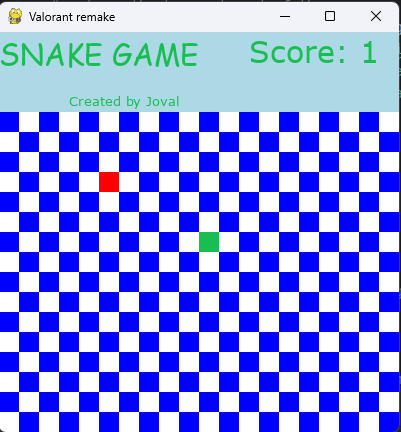

My Projects
Snake Game (Grade 11 Final Project)
Back in Grade 11, one of my biggest projects was building a Snake game in Python. It was the first time I really got into game development, and it helped me learn a lot about how programming logic works. The idea was simple, do the best I can to clone the orginal snake game. Looking back on it, it does look terrible and is also very unoptimized but I'm still proud of it and even prouder of how far I've come
Technologies used: Python, Pygame
Papi Joe's Shawarmania (Grade 12 Final Project)
In Grade 12, I challenged myself with something more creative, so I made a parody cooking game called Papi Joe’s Shawarmania. The goal was to build rice bowls and shawarmas for customers, inspired by games like Papa’s Pizzeria.
Technologies used: Python, Pygame
Healthcare Appointment App (Year 2 College Project)
Later on, I built a desktop application for booking healthcare appointments. The app let patients enter their name, select a doctor, and book an appointment time that was then stored in a database. This project helped me practice UI design, data handling, and connecting frontend and backend logic.

Technologies used: Python, Tkinter